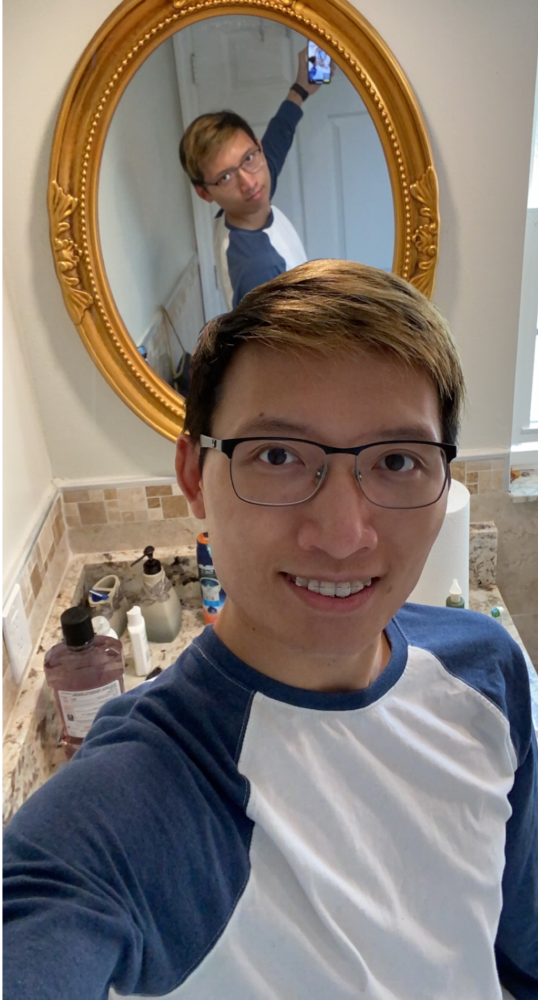
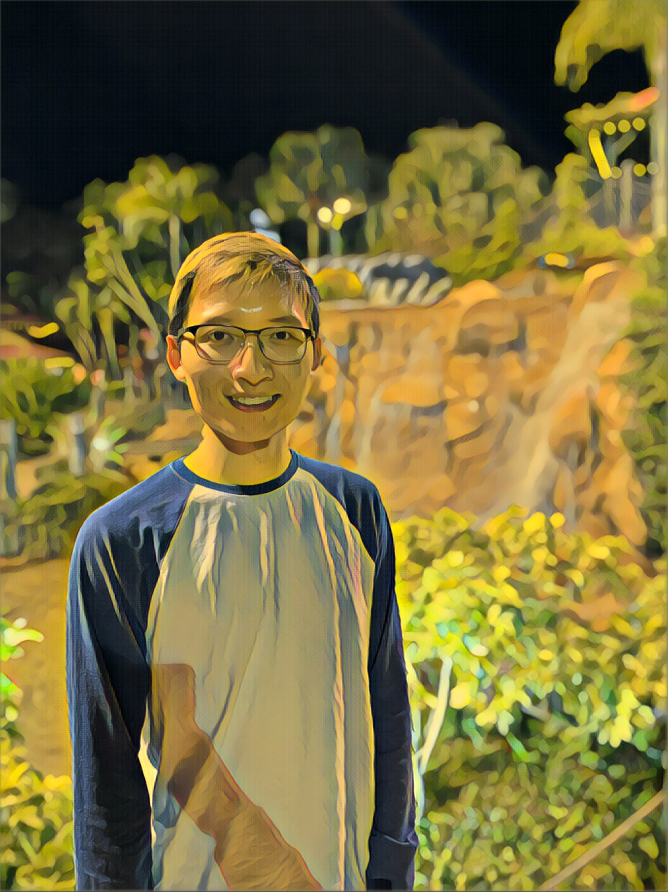

I made this photo using GIMP. I first took a selfie with me looking at the camera. Then I took a second photo in the same spot except this time I was looking at the mirror. I then imported both photos into gimp. I took the mirror part of the second photo and applied it to the first photo. I mostly used the selction and erased tool to remove parts of the background not needed.

This photo was edited using the Prisma app. I applied the Dallas filter to achieve this effect.

This photo was made using Photoshop. The background is a panoramic photo I took when I went on vacation a couple years ago. I then resized the background image and applied a distort filter to achieve the small world effect. I then cropped a photo of myself and applied it to the image. Then I used the clone stamp tool to create more clouds. Finnally I created a shadow by copying the image of myself, changed the color to black, decreased the opacity, and decreased the size of it.